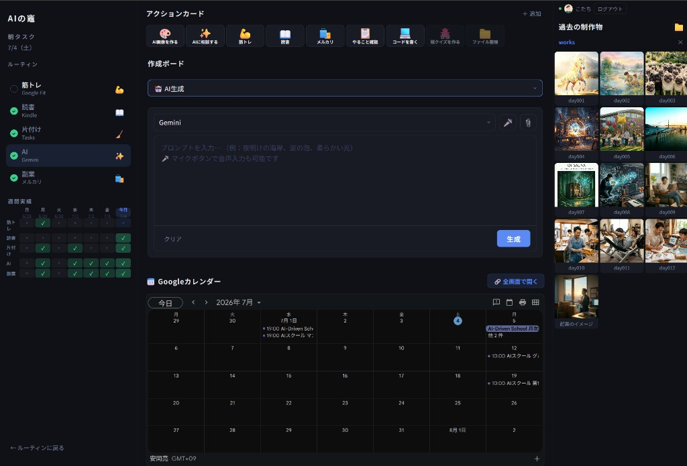

AIの竈 — kamado-launcher
アプリ構成図解
アクションカード・作成ボード・制作物ギャラリーを
1つのHTMLファイルで統合。クロスデバイス同期つき。
画面レイアウト（3カラム構成）
kamado-launcher.vercel.app
左カラム
ルーティン管理
中央カラム（メイン）
アクションカード・作成ボード・カレンダー
右カラム
制作物ギャラリー
単一HTMLファイル（約 2,600行）で3カラムすべてを制御
このアプリで何ができるか
毎日のルーティンを記録・可視化
筋トレ・読書・片付けなど5項目のチェックを毎朝記録。週間グリッドで継続状況が一目でわかる。
やることを即起動
カードをタップするだけでAI・メルカリ・コード作成など各作業へ直行。迷う時間をゼロに。
8種の作成ボードを使い分け
AI生成・3ワード・画像配置・動画・メール・Word・表計算など目的に合ったボードへ即切替。
PCとスマホで続きから再開
Googleログインすると作業状態がクラウドに保存。スマホから開いてもPCの続きが表示される。
AI制作物をギャラリーで管理
PCの指定フォルダを読み込み、生成画像をサムネ表示。クリックでプロンプトを確認・編集できる。
Googleカレンダーを同一画面で確認
予定を別タブで開かなくてもダッシュボードから直接確認。作業しながらスケジュールを把握。
実際の画面 — 各エリアの役割
kamado-launcher.vercel.app

1
ルーティン管理
2
アクションカード
3
作成ボード（8種）
4
Google カレンダー
5
制作物ギャラリー
6
Googleログイン
1
ルーティン管理
毎日のチェックをSheets連携
2
アクションカード
やること一覧 → 即起動
3
作成ボード
8種のボードを切替
4
Googleカレンダー
スケジュール確認
5
制作物ギャラリー
ローカル画像をサムネ表示
6
Googleログイン
クロスデバイス同期
データ保存先は目的ごとに使い分け
ローカル・Google・Firebase の3層で管理
左カラム — 朝タスク・週間実績
ルーティン管理。チェック操作 → Google スプレッドシートへ GAS 経由で双方向同期。
中央カラム — アクションカード・作成ボード
作成ボード（8種）の内容を Firebase Firestore でリアルタイム同期。別デバイスでも続きから。
右カラム — 制作物ギャラリー
PCローカルフォルダを File System Access API で直読み。フォルダ名のみ Firebase に記録。
朝タスク ＆ 週間実績
データフロー
チェック操作
localStorage
週間グリッドに反映
Google Sheets
GAS Web API
localhost と双方向同期
morning-routine.surge.sh と同一の Google スプレッドシートを共有。どちらのサイトからチェックしても互いに反映される。
アクションカード
データフロー
カード追加・編集
localStorage
次回アクセス時に復元
10列アイコン表示
絵文字＋タイトルで視覚的に管理。クリックで即リンクまたはアクション。
追加・編集・削除
モーダルで自由にカスタマイズ。URL・絵文字・タイトルを設定可能。
作成ボード（8種 切替式）
AI生成
Gemini等へ転送
3ワード
組み合わせ
画像配置
自由配置
動画
プレイヤー
ムード
ボード
HTMLメール
作成
Word風
リッチエディタ
表計算
Excel風
クロスデバイス同期フロー
ボード操作
自動保存（800ms後）
Firestore
Firestore
onSnapshot で受信
別デバイスに自動反映
ドラッグ＆ドロップ対応
右のギャラリーから画像をドラッグしてボードに配置。外部からテキスト・ファイルをドロップしてそのまま貼り付け可能。
Firebase クロスデバイス同期
1
Googleログイン
Firebase Auth でUID発行。デバイス問わず同一アカウント。
2
Firestoreへ保存
boardStates/{uid} に作業状態を書き込み。タイムスタンプ付き。
3
別デバイスで受信
onSnapshot がリモート変更を検知し画面を自動更新。
セキュリティルール
match /boardStates/{userId} {
allow read, write:
if request.auth != null
&& request.auth.uid == userId;
}
自分のデータは自分だけが読み書きできる。他のユーザーからは見えない。
制作物ギャラリー（ローカル）
データフロー
フォルダを選択
File System Access API
サムネイル表示
フォルダ名
Firebase に記録
別デバイスでヒント表示
意図的にローカルのまま
AIで生成した画像はサイズが大きくプライベート。クラウドには送らず、PCのフォルダを直接ブラウザで読む。フォルダハンドルはIndexedDBで保持し、再起動後も自動復元。
ライトボックス＋プロンプト管理
画像をクリックすると全画面表示。生成に使ったプロンプトをlocalStorageに紐づけて保存・表示・編集できる。
技術スタック
Vercel
index.html をホスティング。GitHub push で自動デプロイ。無料枠で運用。
Firebase Auth
Google ログインでデバイス横断のUID発行。データを個人ごとに分離。
Cloud Firestore
作成ボードをリアルタイム同期。Spark プラン（無料）で月50,000読み書き。
Google Apps Script
ルーティンの読み書きAPIを無料で提供。Google スプレッドシートと連携。
File System Access API
ブラウザからPCのローカルフォルダを直読み。サーバー不要でプライバシー保護。
localStorage / IndexedDB
アクションカード設定・フォルダハンドル・プロンプトをデバイスに保持。
工夫したポイント
タイムスタンプで同期の競合を防ぐ
保存時に updatedAt を記録。別デバイスの変更がリモートに届いたとき、ローカルより3秒以上新しい場合のみ反映。操作中のデータが上書きされない。
ローカル画像はクラウドに送らない設計
File System Access API でブラウザ完結。フォルダ名だけFirestoreに保存することで、スマホから開いたとき「前回は works フォルダを使っていた」とヒントを表示できる。
ギャラリー → ボードへのドラッグ実装
右のローカル画像を左のボードへドラッグ&ドロップで配置。外部テキスト・ファイルのドロップにも対応。Drag-and-Drop API を活用。
AI の竈 — kamado-launcher
アクションカード・マルチボード・ローカルギャラリーを1 HTMLで統合したパーソナルランチャー
アプリを開く
HTML 単一ファイル（約2,600行）
·
Firebase Spark（無料）
·
Vercel 無料枠